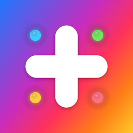

Schnell. Einfach. Zählen.
Fast. Simple. Count.
Tap Counter ist dein schneller, unkomplizierter Zähler für den Alltag. Wähle zwischen 4 Modi mit bis zu 4 gleichzeitigen Zählern – jeder in einer eigenen Farbe. Tippen zum Zählen, langes Drücken zum Zurücksetzen. Mit haptischem Feedback bei jeder Aktion.
Tap Counter is your fast, no-fuss counter for everyday use. Choose from 4 modes with up to 4 simultaneous counters – each in its own color. Tap to count, long press to reset. With haptic feedback on every action.
Halte den Zähler ca. 1 Sekunde lang gedrückt. Der Zähler wird auf 0 zurückgesetzt und du spürst ein haptisches Feedback.
Nein, die Zählerstände werden aktuell nicht dauerhaft gespeichert. Beim Beenden der App werden sie zurückgesetzt. Wenn du einen Modus mit laufenden Zählern verlässt, fragt die App vorher nach.
Keine. Tap Counter sammelt keinerlei persönliche Daten, Nutzungsdaten oder Analysedaten. Alles bleibt auf deinem Gerät.
Ja, Tap Counter funktioniert komplett offline. Es wird keine Internetverbindung benötigt.
Press and hold the counter for about 1 second. The counter resets to 0 and you'll feel haptic feedback.
No, counter values are currently not saved permanently. They reset when the app is closed. If you leave a mode while counters are running, the app asks first.
None. Tap Counter does not collect any personal data, usage data, or analytics. Everything stays on your device.
Yes, Tap Counter works completely offline. No internet connection is required.
Du hast eine Frage, einen Fehler gefunden oder einen Verbesserungsvorschlag? Schreib mir gerne eine E-Mail:
Have a question, found a bug, or have a suggestion? Feel free to send me an email:
janhendrik.hees@gmail.comDeine Privatsphäre ist uns wichtig. Tap Counter sammelt keine persönlichen Daten.
Your privacy matters. Tap Counter does not collect any personal data.
Datenschutzerklärung lesen → Read Privacy Policy →Angaben gemäß § 5 DDG
Jan-Hendrik Hees
Auf dem Burhof 10
58093 Hagen
Deutschland
Kontakt
E-Mail: janhendrik.hees@gmail.com
Information pursuant to § 5 DDG (German Digital Services Act)
Jan-Hendrik Hees
Auf dem Burhof 10
58093 Hagen
Germany
Contact
Email: janhendrik.hees@gmail.com